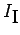
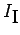

Inhalt Index DeskTop Bronstein

 Funktionentheorie Berechnung reeller Integrale durch Integration im Komplexen Anwendungen des Lemmas von Jordan
Funktionentheorie Berechnung reeller Integrale durch Integration im Komplexen Anwendungen des Lemmas von Jordan


Zur Herleitung der FRESNELschen Integrale
wird das Integral mit dem in der folgenden Abbildung skizzierten geschlossenen Integrationsweg untersucht.
Nach dem Integralsatz von CAUCHY gilt: mit
,  ,
,
Abschätzung von : Unter Beachtung von gilt:

Führt man den Grenzübergang  durch, dann lassen sich die Integrale  und auswerten: und durch Trennung von Real- und Imaginärteil erhält man die angegebenen Formeln (14.62).
durch, dann lassen sich die Integrale  und auswerten: und durch Trennung von Real- und Imaginärteil erhält man die angegebenen Formeln (14.62).